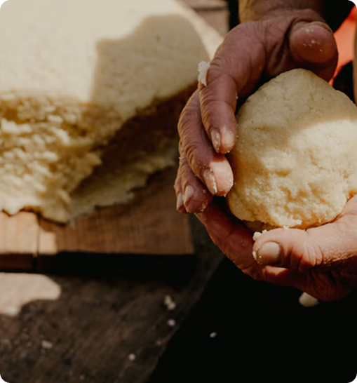
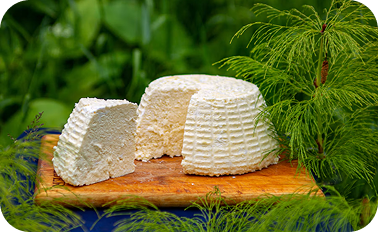
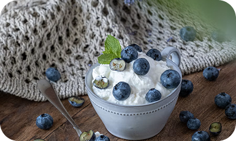

Простой продукт с большой историей, в котором соединились польза, традиции и настоящий вкус.
На Руси творог называли сыром, а блюда из него — сырными. Его готовили в остывающей печи, бережно отделяя сыворотку от нежного сгустка.
Чтобы сохранить продукт надолго, творог несколько раз прессовали и снова отправляли в печь. Так он становился плотным и мог храниться месяцами. Сегодня технологии изменились, но главные принципы остались прежними: свежее молоко, живая закваска и время.

Жирность влияет на текстуру и насыщенность, но каждый вид сохраняет главную пользу продукта.

Мягкий, сливочный вкус и достаточно плотная текстура. Для завтрака и выпечки.
4–9%
Плотные упругие зёрна в лёгкой сыворотке. Хорош сам по себе.
5–7%Лёгкий и свежий вариант с низким содержанием белка.
0–1%— каждый день —
Помогает мышцам восстанавливаться и надолго сохраняет сытость.
Поддерживает здоровье костей и крепость зубов.
Аминокислоты и витамины помогают естественной защите организма.